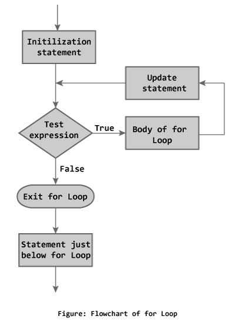

Loops are used in programming to repeat a specific block until some end condition is met. There are three loops in C programming:
- for loop
- while loop
- do...while loop
for Loop
The syntax of for loop is:
for (initializationStatement; testExpression; updateStatement)
{
// codes
}
How for loop works?
The initialization statement is executed only once.
Then, the test expression is evaluated. If the test expression is false (0), for loop is terminated. But if the test expression is true (nonzero), codes inside the body of for loop is executed and the update expression is updated.
This process repeats until the test expression is false.
The for loop is commonly used when the number of iterations is known.
To learn more on test expression (when test expression is evaluated to nonzero (true) and 0 (false)), check out relational and logical operators.
for loop Flowchart

Example: for loop
// Program to calculate the sum of first n natural numbers
// Positive integers 1,2,3...n are known as natural numbers
#include <stdio.h>
int main()
{
int num, count, sum = 0;
printf("Enter a positive integer: ");
scanf("%d", &num);
// for loop terminates when n is less than count
for(count = 1; count <= num; ++count)
{
sum += count;
}
printf("Sum = %d", sum);
return 0;
}
Output
Enter a positive integer: 10 Sum = 55
The value entered by the user is stored in variable num. Suppose, the user entered 10.
The count is initialized to 1 and the test expression is evaluated. Since, the test expression count <= num (1 less than or equal to 10) is true, the body of for loop is executed and the value of sum will equal to 1.
Then, the update statement ++count is executed and count will equal to 2. Again, the test expression is evaluated. Since, 2 is also less than 10, the test expression is evaluated to true and the body of for loop is executed. Now, the sum will equal 3.
This process goes on and the sum is calculated until the count reaches 11.
When the count is 11, the test expression is evaluated to 0 (false) as 11 is not less than or equal to 10. Therefore, the loop terminates and next, the total sum is printed.